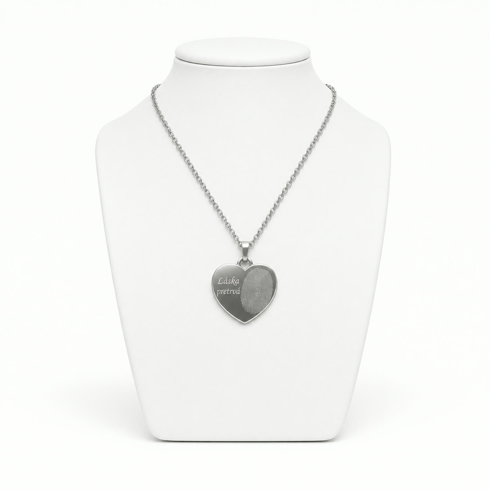

Rakvy
Široký výber elegantných rakiev z prvotriednych materiálov. V showroome v Poprade si ich pozriete naživo.

Pätnásť služieb pod jednou strechou. Zavoláte raz a o všetko ostatné sa postaráme my.
Široký výber elegantných rakiev z prvotriednych materiálov. V showroome v Poprade si ich pozriete naživo.
Kompletné zabezpečenie obradu vrátane prípravy miesta, výzdoby a organizácie celého priebehu.
Možnosť rozlúčky, ktorá rešpektuje želania zosnulého aj pozostalých. Poradíme vám s výberom.
Vence, kytice a kvetinová výzdoba obradu. Vyjadrujú úctu tam, kde slová nestačia.
Dôstojné oblečenie a úprava zosnulého. Súčasť rozlúčky, ktorá odráža rešpekt a úctu.
Jedinečný spôsob, ako si uctiť pamiatku zosnulého a zdieľať spomienku s rodinou a blízkymi.
Dôstojný a rýchly prevoz z bytov a nemocníc, 24 hodín denne. Dbáme na hygienické aj právne predpisy.
Preprava zosnulých zo zahraničia vrátane vybavenia všetkých dokumentov. Ako prví v regióne.
Exkluzívna limuzína ocenená ako najkrajšia na Slovensku. Elegancia, dôstojnosť a moderný dizajn.
Vlastná technológia, ktorú sme ako prví predstavili na výstave Slovak Funeral. Umožňuje dôstojnú rozlúčku aj doma.
Výroba betónových hrobiek, predaj a montáž žulových pomníkov, písmo aj doplnky. Od výkopu po hotový pomník.
Pomník uvidíte ešte pred výrobou. Ako prví v regióne pripravíme presnú 3D vizualizáciu.
Strata blízkeho je jedna z najťažších skúseností. Sprevádzame vás procesom smútenia, nie ste v tom sami.
Naplánujte si poslednú rozlúčku vopred podľa vlastných predstáv a odbremeňte svojich blízkych.
Náramky a retiazky s gravírovaným odtlačkom prsta. Kúsok blízkeho človeka navždy pri vás.
Odtlačok prsta blízkeho človeka gravírujeme do striebra, zlata alebo ružového zlata. Náramky a retiazky vyrábame s nápisom podľa vášho želania.
Šperky si pozriete v showroome v Poprade, radi vám ich ukážeme aj na ostatných pobočkách.

Zavolajte kedykoľvek. Poradíme, prevezmeme a s úctou zabezpečíme všetko potrebné.
NON STOP · 0903 596 364